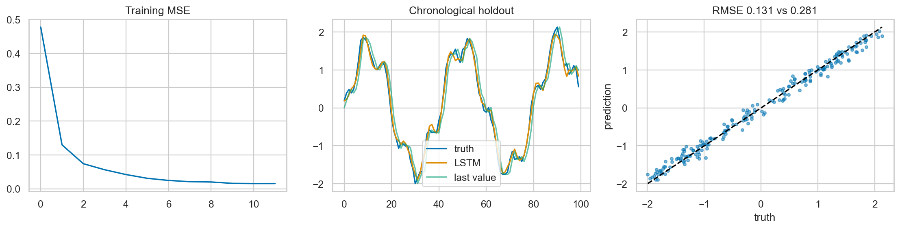

ML Hands-on Lab · 09 — Neural networks
RNNs and LSTMs for sequences
1. The one-sentence version
RNNs and LSTMs for sequences converts a particular structural assumption into a practical prediction or representation.
2. The intuition
Think of rnns and lstms for sequences as a compact rule for deciding which observations should influence one another; the rule helps only when that notion of relatedness matches the problem.
A five-item example
For five values [1,2,3,4,5] and window length 3, training pairs are [1,2,3]→4 and [2,3,4]→5; a recursive two-step forecast must feed its predicted 4 back to predict 5.
3. The maths in plain English
\[c_t=f_t\odot c_{t-1}+i_t\odot\tilde c_t,\quad h_t=o_t\odot\tanh(c_t)\]
ct is memory; forget gate ft retains old memory, input gate it writes candidates, and output gate ot reveals part as hidden state ht.
4. What the model is actually doing during training
- Read one scalar and previous state at each time step.
- LSTM gates decide what to forget, write, and expose.
- Use the final hidden state to predict the next value.
- Backpropagate loss through all unrolled steps.
5. The knobs
| Knob | Too low | Too high |
|---|---|---|
| capacity | The model misses real structure. | The model follows sampling noise. |
| regularization | Estimates become unstable. | Useful signal is suppressed. |
| data budget | Uncertainty stays high. | Compute rises after gains flatten. |
6. Assumptions and failure modes
A one-step LSTM trained on true history can accumulate its own errors when predictions are recursively fed back.

7. Code
Minimal version
# See the matching notebook for the minimal executable fit.
model.fit(X_train, y_train)
prediction = model.predict(X_test)Realistic version
# Keep preprocessing inside validation and compare with a baseline.
search.fit(X_train, y_train)
final_score = metric(y_test, search.predict(X_test))8. Where it's actually used
- Short sensor-sequence forecasting.
- Speech or handwriting sequence baselines.
- Event-stream classification.
- Legacy sequence systems where recurrent state is operationally useful.
9. How it relates to its neighbours
Vanilla RNNs have weaker long memory. GRUs simplify gates. Transformers process all positions with attention and parallel training, displacing LSTMs in many large-scale tasks.